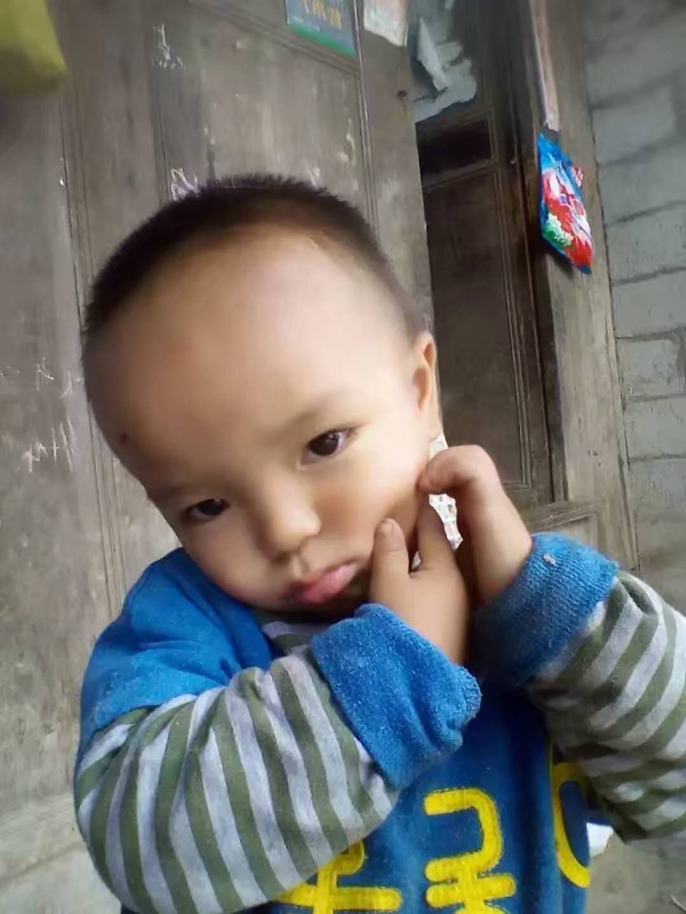

家人与家乡
我们一家三口，父亲，姐姐还有我。老家贵州遵义，是一个环境特别舒服的地方.具体的好我也不加赘述，总而言之从半山腰走出来的我，有一种大山的情节和依恋。最让人暖心的一个词莫过于回家，我想，每一个从那里走出来的人都会这样吧。就像一些没上过学的大人也知道，有钱没钱，回家过年！ 贵州遵义？能再具体一点吗？——务川仡佬族苗族自治县蕉坝镇龙桥村岩脚组x号
这里尬了一张图

个人爱好
爱好，家人会说游戏，同学多数会说学习，这的确是从新传的调查作业中得出的一般结论hhh，个人觉得，我可能和同学开黑少了...当然了，这些都不是最重要的，我最能正常说出口的爱好是羽毛球，可能是它让人发泄，可能是它给人痛快感，可能是它上手简单，可能只是单纯喜欢吧。不擅长的喜欢有点无趣，所以我想变成有趣的，懂我意思吧 另外，听歌也算。我也不知道我到底喜静还是喜动，有点复杂，不好一棒子打死。
还有还有，喜欢刷抖音。抖音这个东西吧，好与坏我也不好一棒子打死哈哈
啥也不是
有些东西真不知道取什么标题好
说点以后的事，我想把北京搞熟悉，再怎么说，我也是要在这里待上七年啊。其次，还想去贵州邻省四川玩玩，别问，问就是略略略。直觉告诉我，那是个好地方。
咱北大也没啥本事是，闲下来怼怼隔壁。刷抖音伤脑阔啊点我点我！

童年记忆
怎么说呢，我在凑内容了。
妙不可言。两字：怀恋！怀恋一群孩子漫山跑，怀恋野火山中烧包谷，怀恋哪家牛又把哪家菜吃了......反正大概就那样子，懂的都懂


未来未来
未来来辽！